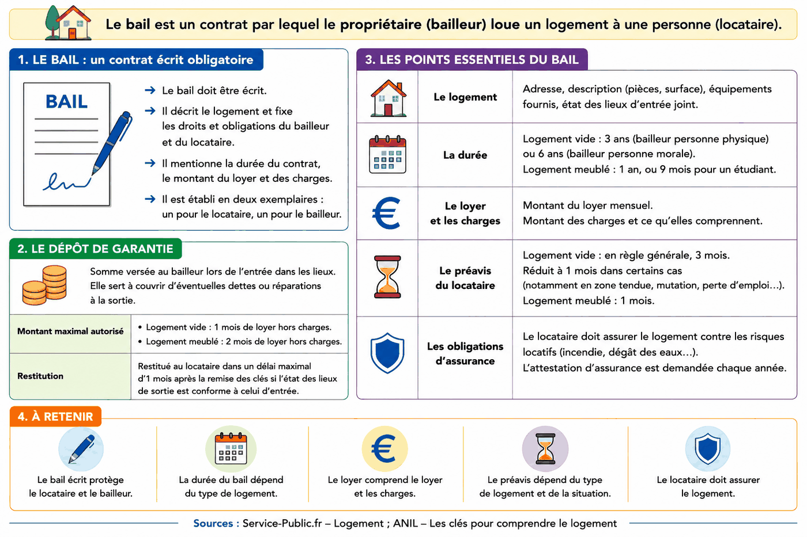
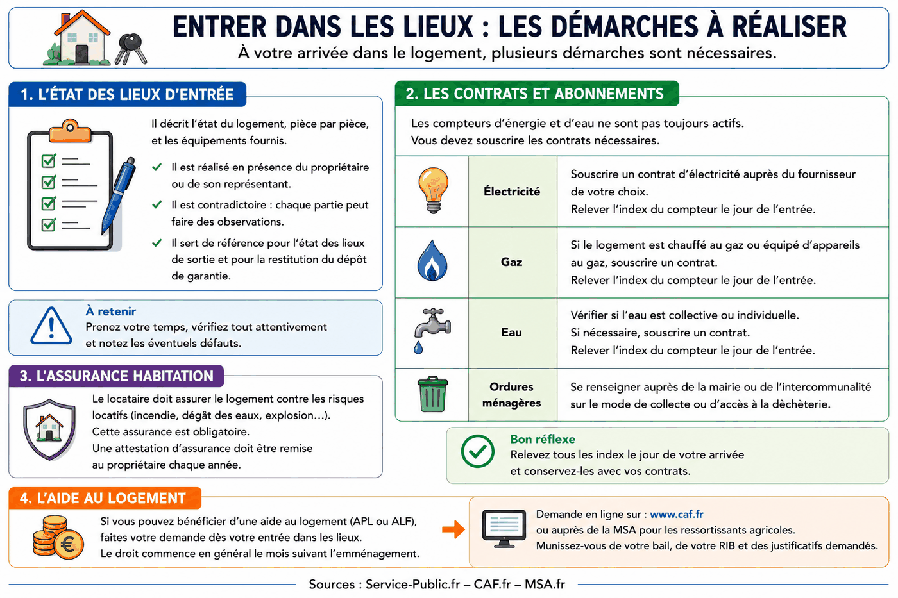
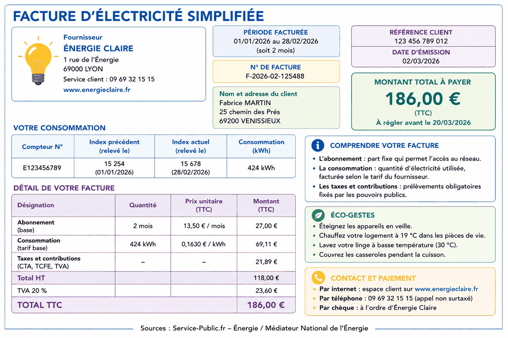
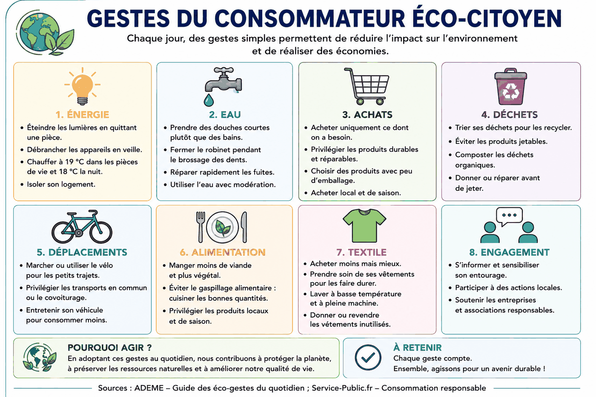
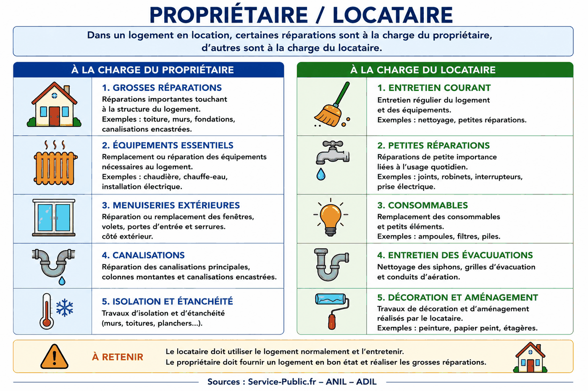

CAP agricole · SESG · MG1 — Faire des choix pour répondre aux besoins de la vie courante.
CG1.2Préparation au CCF
Ce qui sera acquis à la fin du chapitre
Comprendre un bail et les principales démarches d’entrée dans un logement.
Calculer le coût réel mensuel d’un logement.
Identifier des gestes permettant de maîtriser les consommations.
Comparer une location et un achat en utilisant des données chiffrées et des contraintes concrètes.
Séance 1
Louer un logement : le bail et l’entrée dans les lieux
Objectifs : repérer les informations essentielles d’un bail et identifier les démarches à accomplir lors d’un emménagement.
La situation
Samir et Nadia louent un appartement depuis quatre ans : 620 € de loyer hors charges et 90 € de charges. Leur fille aînée cherche un studio pour sa formation et n’a encore jamais signé de contrat de location.
DOC. 1 — Le bail, contrat de location

Description écrite du document
Infographie expliquant le bail d'habitation : contrat écrit, logement, durée, loyer et charges, préavis, assurance et dépôt de garantie. Pour un logement vide loué par un particulier, la durée est en principe de trois ans ; pour un meublé, un an, ou neuf mois pour un étudiant. Le dépôt de garantie maximal est d'un mois de loyer hors charges en location vide et de deux mois en meublé.
À partir du document 1 :
1.1Relever quatre informations essentielles qui figurent dans un bail. Écrire une information par ligne.
Réponse
–
–
–
–
Un indice
Relire le document placé juste avant la question.
Le corrigé
Quatre parmi : logement et adresse ; durée ; loyer et charges ; préavis ; assurance ; dépôt de garantie.
Explication
Il faut prélever quatre informations différentes dans le document, sans en inventer.
1.2Calculer le dépôt de garantie maximal pour le logement vide de Samir et Nadia. Poser le calcul et indiquer le résultat en euros.
Un indice
Relire le document placé juste avant la question.
Le corrigé
Le dépôt maximal correspond à un mois de loyer hors charges : 620 €.
Explication
Pour un logement vide, le dépôt de garantie maximal est d'un mois de loyer hors charges. Les 90 € de charges ne sont pas ajoutés.
1.3Calculer le dépôt de garantie maximal pour un studio meublé dont le loyer hors charges est de 480 €. Poser le calcul et indiquer le résultat en euros.
Un indice
Relire le document placé juste avant la question.
Le corrigé
2 × 480 = 960 €.
Explication
Pour un logement meublé, le dépôt de garantie maximal est de deux mois de loyer hors charges.
1.4Calculer la somme supplémentaire à avancer pour le dépôt de garantie d’un studio meublé à 480 € plutôt que d’un studio vide au même loyer. Poser le calcul et indiquer le résultat en euros.
Un indice
Relire le document placé juste avant la question.
Le corrigé
960 − 480 = 480 €.
Explication
Comparer les deux dépôts : 960 € pour le meublé et 480 € pour le vide.
DOC. 2 — Entrer dans les lieux : les démarches à réaliser

Description écrite du document
Infographie présentant les principales démarches lors de l'entrée dans un logement : état des lieux d'entrée, contrats d'électricité, de gaz et éventuellement d'eau, relevé des index, assurance habitation et demande d'aide au logement auprès de la CAF ou de la MSA selon la situation.
À partir du document 2 :
2.1Expliquer l’utilité de l’état des lieux d’entrée, en rédigeant une phrase.
Un indice
Relire le document placé juste avant la question.
Le corrigé
Il décrit l'état initial du logement et sert de référence lors de l'état des lieux de sortie, notamment pour déterminer d'éventuelles dégradations.
Explication
La réponse doit faire apparaître l'idée de comparaison entre l'entrée et la sortie.
2.2Expliquer l’utilité du relevé des index des compteurs le jour de l’entrée, en rédigeant une phrase.
Un indice
Relire le document placé juste avant la question.
Le corrigé
Le relevé fixe le point de départ de la consommation qui sera attribuée au nouvel occupant.
Explication
Un index est la valeur inscrite sur le compteur à une date donnée.
2.3Indiquer l’organisme auprès duquel un ressortissant du régime agricole peut demander une aide au logement.
Un indice
Relire le document placé juste avant la question.
Le corrigé
La Mutualité sociale agricole (MSA).
Explication
Le document distingue la CAF et la MSA. Pour un ressortissant du régime agricole, la demande relève de la MSA.
2.4Relever deux justificatifs indiqués dans le document pour préparer une demande d’aide au logement. Écrire un justificatif par ligne.
Réponse
–
–
Un indice
Relire le document placé juste avant la question.
Le corrigé
Deux parmi : le bail ; le RIB ; les justificatifs demandés.
Explication
Il faut reprendre deux éléments explicitement indiqués dans le document.
Lexique de la séance 1
Bail
Contrat écrit qui fixe les conditions de la location entre le bailleur et le locataire.
Dépôt de garantie
Somme versée au bailleur au début de la location pour garantir certaines sommes qui pourraient rester dues.
État des lieux
Description du logement et de ses équipements à l’entrée puis à la sortie.
Index de compteur
Valeur relevée sur un compteur à une date donnée.
Aide au logement
Prestation pouvant réduire la dépense de logement selon la situation du foyer.
Auto-évaluation de la séance 1
1. Pour un logement vide, le dépôt de garantie maximal correspond à…
Le corrigé. un mois de loyer hors charges
2. Quel document sert à comparer l’état du logement à l’entrée et à la sortie ?
Le corrigé. L’état des lieux
3. Pour un ressortissant du régime agricole, l’aide au logement peut être demandée auprès de…
Le corrigé. la MSA
4. Citer une démarche à réaliser lors de l’entrée dans un logement.
Le corrigé. Exemples : réaliser l’état des lieux, souscrire les contrats nécessaires, relever les index, assurer le logement, demander une aide au logement.
Comparer :
Score : —
À reprendre. Reprendre les documents 1 et 2.
À consolider. Revoir le dépôt de garantie et les démarches d’entrée.
Acquis. Les principales règles de la location sont acquises.
Séance 2
Ce que coûte vraiment un logement, et comment agir dessus
Objectifs : calculer le coût réel mensuel d’un logement et identifier des gestes permettant de maîtriser les consommations.
La situation
Samir rassemble la quittance de loyer, la facture d’électricité, l’assurance et le courrier de la MSA. Il veut connaître le coût réel mensuel du logement.
DOC. 3 — Les documents du mois de Samir et Nadia
Document
Ce qu’il indique
Montant
Quittance de loyer
Loyer hors charges
620,00 € par mois
Quittance de loyer
Provision pour charges
90,00 € par mois
Facture d’électricité
Période de deux mois
186,00 €
Attestation d’assurance
Cotisation annuelle
168,00 €
Courrier MSA
Aide au logement
145,00 € par mois
Ressources du ménage
Ressources mensuelles
2 798,00 €
À partir du document 3 :
1.1Calculer le montant mensuel de l’électricité puis celui de l’assurance. Poser les deux calculs et indiquer les résultats en euros.
Un indice
Relire le document placé juste avant la question.
Le corrigé
Électricité : 186 ÷ 2 = 93 € par mois.
Assurance : 168 ÷ 12 = 14 € par mois.
Explication
Mensualiser signifie ramener chaque dépense à un mois.
1.2Calculer le total mensuel des dépenses de logement avant l’aide au logement. Poser le calcul et indiquer le résultat en euros.
Un indice
Relire le document placé juste avant la question.
Le corrigé
620 + 90 + 93 + 14 = 817 € par mois.
Explication
Additionner le loyer, les charges, l'électricité mensualisée et l'assurance mensualisée.
1.3Calculer le coût réel mensuel du logement après déduction de l’aide au logement. Poser le calcul et indiquer le résultat en euros.
Un indice
Relire le document placé juste avant la question.
Le corrigé
817 − 145 = 672 € par mois.
Explication
L'aide au logement diminue la dépense supportée par le ménage.
1.4Calculer la part des ressources mensuelles consacrée au logement. Poser le calcul et indiquer le résultat en pourcentage, arrondi à l’unité.
Un indice
Relire le document placé juste avant la question.
Le corrigé
672 ÷ 2 798 × 100 ≈ 24 %.
Explication
Diviser le coût réel du logement par les ressources mensuelles puis multiplier par 100.
DOC. 4 — Facture d’électricité simplifiée

Description écrite du document
Facture d'électricité simplifiée présentant un abonnement, une consommation mesurée en kilowattheures, des taxes et contributions, ainsi que les informations de période, de compteur et de paiement.
À partir du document 4 :
2.1Relever le montant de l’abonnement et celui de la consommation indiqués dans le détail de la facture. Écrire un montant par ligne.
Réponse
–
–
Un indice
Relire le document placé juste avant la question.
Le corrigé
Abonnement : 27,00 €.
Consommation : 69,11 €.
Explication
L'abonnement correspond à la part fixe ; la consommation correspond à la part variable liée aux kWh utilisés.
2.2Expliquer pourquoi une facture d’électricité comporte une part qui reste due même lorsque la consommation diminue fortement.
Un indice
Relire le document placé juste avant la question.
Le corrigé
Parce que l'abonnement constitue une part fixe de la facture, distincte de la consommation.
Explication
Le document distingue la part fixe liée à l'abonnement et la part variable liée aux kWh consommés.
DOC. 5 — Gestes du consommateur éco-citoyen

Description écrite du document
Infographie présentant des gestes de consommation responsables dans huit domaines : énergie, eau, achats, déchets, déplacements, alimentation, textile et engagement. Les exemples incluent l'extinction des lumières, la réduction des veilles, les douches courtes, les achats durables, le tri, les mobilités actives et la réduction du gaspillage.
À partir du document 5 :
3.1Relever deux gestes qui permettent de réduire la consommation d’énergie dans le logement. Écrire un geste par ligne.
Réponse
–
–
Un indice
Relire le document placé juste avant la question.
Le corrigé
Deux parmi : éteindre les lumières en quittant une pièce ; débrancher les appareils en veille ; chauffer raisonnablement ; isoler le logement.
Explication
Les deux gestes doivent appartenir à la rubrique « Énergie » du document.
3.2Proposer un geste que Samir et Nadia pourraient appliquer dans leur logement et expliquer son effet attendu sur les consommations ou les dépenses, en rédigeant deux phrases au maximum.
Un indice
Relire le document placé juste avant la question.
Le corrigé
Exemple : ils peuvent éteindre les appareils en veille. Cela réduit la consommation d'électricité et peut diminuer la facture.
Explication
Le geste doit venir du document et l'effet doit être cohérent avec ce geste.
Lexique de la séance 2
Abonnement
Part fixe d’un contrat d’énergie, due indépendamment de la quantité consommée.
Consommation
Quantité d’énergie réellement utilisée pendant une période.
Kilowattheure (kWh)
Unité utilisée pour mesurer une quantité d’électricité consommée.
Mensualiser
Ramener une dépense à un montant moyen par mois.
Coût réel du logement
Ensemble des dépenses mensuelles de logement après prise en compte des aides.
Éco-geste
Action simple visant à réduire les consommations et l’impact sur l’environnement.
Auto-évaluation de la séance 2
1. Une facture de 186 € porte sur deux mois. Quel est son montant mensuel moyen ?
Le corrigé. 93 €
2. Quelle partie d’une facture d’électricité est fixe ?
Le corrigé. L’abonnement
3. Quel geste réduit directement une consommation d’électricité ?
Le corrigé. Éteindre les lumières inutiles
4. Expliquer ce que signifie mensualiser une dépense.
Le corrigé. Mensualiser consiste à ramener une dépense à un montant par mois, par exemple en divisant une dépense annuelle par 12.
Comparer :
Score : —
À reprendre. Reprendre les calculs de mensualisation et le document 4.
À consolider. Revoir le coût réel du logement et les éco-gestes.
Acquis. Les calculs de charges et les gestes de maîtrise des consommations sont acquis.
Séance 3
Rester locataires ou acheter : comparer avant de décider
Objectifs : comparer les charges liées à la location et à l’achat, puis justifier un choix en utilisant des données chiffrées et des contraintes concrètes.
La situation
Pour une maison avec terrain, la banque propose à Samir et Nadia une mensualité de prêt de 820 € pendant vingt-cinq ans. Nadia a besoin d’espace pour entreposer son matériel. Samir veut comparer les deux options sans regarder uniquement le montant du loyer.
DOC. 6 — Propriétaire / locataire

Description écrite du document
Infographie comparant les responsabilités du propriétaire et du locataire. Le propriétaire prend en charge les grosses réparations et certains travaux importants ; le locataire assure l'entretien courant et les petites réparations liées à l'usage.
DOC. 7 — Comparaison mensuelle : rester locataires ou acheter
Poste mensuel
Rester locataires
Acheter la maison
Loyer ou mensualité de prêt
620,00 €
820,00 €
Charges locatives
90,00 €
—
Électricité
93,00 €
105,00 €
Assurance
14,00 €
22,00 €
Taxe foncière
—
65,00 €
Aide au logement
− 145,00 €
—
TOTAL MENSUEL
672,00 €
1 012,00 €
Données de la situation. La taxe foncière est de 780 € par an, soit 65 € par mois.
À partir des documents 6 et 7 et de la situation :
1.1Calculer l’écart mensuel entre l’option « acheter » et l’option « rester locataires ». Poser le calcul et indiquer le résultat en euros.
Un indice
Relire le document placé juste avant la question.
Le corrigé
1 012 − 672 = 340 € de plus par mois pour l'option achat.
Explication
Comparer les deux totaux mensuels indiqués dans le document 7.
1.2Calculer la part des ressources du ménage que représenterait l’option « acheter », avec des ressources mensuelles de 2 798 €. Poser le calcul et indiquer le résultat en pourcentage, arrondi à l’unité.
Un indice
Relire le document placé juste avant la question.
Le corrigé
1 012 ÷ 2 798 × 100 ≈ 36 %.
Explication
Diviser le coût mensuel de l'achat par les ressources mensuelles puis multiplier par 100.
1.3Expliquer pourquoi le seul écart de coût mensuel ne suffit pas à choisir entre location et achat. Utiliser un élément de la situation ou du document 6.
Un indice
Relire le document placé juste avant la question.
Le corrigé
Exemple : l'achat coûte davantage chaque mois, mais il répond au besoin d'espace de Nadia ; de plus, le propriétaire assume les grosses réparations alors que le locataire n'en a pas la charge.
Explication
Il faut ajouter au moins un élément non chiffré à la comparaison financière.
1.4Justifier le choix qui paraît le plus adapté à Samir et Nadia en utilisant deux données chiffrées et un élément non chiffré.
Un indice
Relire le document placé juste avant la question.
Le corrigé
Toute réponse cohérente est recevable. Exemple : rester locataires peut être choisi car le coût est de 672 € contre 1 012 € à l'achat, soit 340 € de moins par mois, et les grosses réparations restent à la charge du propriétaire. L'achat peut aussi être justifié avec des arguments cohérents, notamment le besoin d'espace de Nadia et la durée du projet.
Explication
La réponse doit annoncer un choix, utiliser deux données chiffrées exactes et ajouter un argument qualitatif.
Lexique de la séance 3
Mensualité de prêt
Somme versée chaque mois à la banque pour rembourser un crédit immobilier.
Taxe foncière
Impôt local dû par le propriétaire d’un bien immobilier.
Entretien courant
Petits travaux et soins réguliers liés à l’usage normal du logement.
Grosses réparations
Travaux importants relevant en principe du propriétaire dans un logement loué.
Patrimoine
Ensemble des biens possédés par une personne ou un ménage.
Auto-évaluation de la séance 3
1. Qui prend en charge les grosses réparations dans un logement loué ?
Le corrigé. Le propriétaire
2. Quel est le total mensuel de l’option achat dans le document 7 ?
Le corrigé. 1 012 €
3. Quel est l’écart mensuel entre les deux options ?
Le corrigé. 340 €
4. Citer un élément non chiffré à prendre en compte avant de choisir entre louer et acheter.
Le corrigé. Exemples : le besoin d'espace de Nadia ; la responsabilité des grosses réparations ; la durée du projet ; la constitution d'un patrimoine.
Comparer :
Score : —
À reprendre. Reprendre les documents 6 et 7.
À consolider. Revoir la différence entre coût et contraintes du choix.
Acquis. La comparaison location/achat et la justification d'un choix sont acquises.